Remapping¶
Goal¶
In this tutorial you will learn how to:
- Use the OpenCV function remap to implement simple remapping routines.
Theory¶
What is remapping?¶
It is the process of taking pixels from one place in the image and locating them in another position in a new image.
To accomplish the mapping process, it might be necessary to do some interpolation for non-integer pixel locations, since there will not always be a one-to-one-pixel correspondence between source and destination images.
We can express the remap for every pixel location
 as:
as: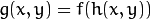
where 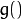 is the remapped image, 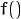 the source image and 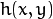 is the mapping function that operates on
.Let’s think in a quick example. Imagine that we have an image
 and, say, we want to do a remap such that:
and, say, we want to do a remap such that: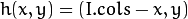
What would happen? It is easily seen that the image would flip in the
 direction. For instance, consider the input image:
direction. For instance, consider the input image:
observe how the red circle changes positions with respect to x (considering
the horizontal direction):
In OpenCV, the function remap offers a simple remapping implementation.
Code¶
- What does this program do?
- Loads an image
- Each second, apply 1 of 4 different remapping processes to the image and display them indefinitely in a window.
- Wait for the user to exit the program
- The tutorial code’s is shown lines below. You can also download it from here
#include "opencv2/highgui/highgui.hpp"
#include "opencv2/imgproc/imgproc.hpp"
#include <iostream>
#include <stdio.h>
using namespace cv;
/// Global variables
Mat src, dst;
Mat map_x, map_y;
char* remap_window = "Remap demo";
int ind = 0;
/// Function Headers
void update_map( void );
/**
* @function main
*/
int main( int argc, char** argv )
{
/// Load the image
src = imread( argv[1], 1 );
/// Create dst, map_x and map_y with the same size as src:
dst.create( src.size(), src.type() );
map_x.create( src.size(), CV_32FC1 );
map_y.create( src.size(), CV_32FC1 );
/// Create window
namedWindow( remap_window, CV_WINDOW_AUTOSIZE );
/// Loop
while( true )
{
/// Each 1 sec. Press ESC to exit the program
int c = waitKey( 1000 );
if( (char)c == 27 )
{ break; }
/// Update map_x & map_y. Then apply remap
update_map();
remap( src, dst, map_x, map_y, CV_INTER_LINEAR, BORDER_CONSTANT, Scalar(0,0, 0) );
/// Display results
imshow( remap_window, dst );
}
return 0;
}
/**
* @function update_map
* @brief Fill the map_x and map_y matrices with 4 types of mappings
*/
void update_map( void )
{
ind = ind%4;
for( int j = 0; j < src.rows; j++ )
{ for( int i = 0; i < src.cols; i++ )
{
switch( ind )
{
case 0:
if( i > src.cols*0.25 && i < src.cols*0.75 && j > src.rows*0.25 && j < src.rows*0.75 )
{
map_x.at<float>(j,i) = 2*( i - src.cols*0.25 ) + 0.5 ;
map_y.at<float>(j,i) = 2*( j - src.rows*0.25 ) + 0.5 ;
}
else
{ map_x.at<float>(j,i) = 0 ;
map_y.at<float>(j,i) = 0 ;
}
break;
case 1:
map_x.at<float>(j,i) = i ;
map_y.at<float>(j,i) = src.rows - j ;
break;
case 2:
map_x.at<float>(j,i) = src.cols - i ;
map_y.at<float>(j,i) = j ;
break;
case 3:
map_x.at<float>(j,i) = src.cols - i ;
map_y.at<float>(j,i) = src.rows - j ;
break;
} // end of switch
}
}
ind++;
}
Explanation¶
Create some variables we will use:
Mat src, dst; Mat map_x, map_y; char* remap_window = "Remap demo"; int ind = 0;
Load an image:
src = imread( argv[1], 1 );
Create the destination image and the two mapping matrices (for x and y )
dst.create( src.size(), src.type() ); map_x.create( src.size(), CV_32FC1 ); map_y.create( src.size(), CV_32FC1 );
Create a window to display results
namedWindow( remap_window, CV_WINDOW_AUTOSIZE );
Establish a loop. Each 1000 ms we update our mapping matrices (mat_x and mat_y) and apply them to our source image:
while( true ) { /// Each 1 sec. Press ESC to exit the program int c = waitKey( 1000 ); if( (char)c == 27 ) { break; } /// Update map_x & map_y. Then apply remap update_map(); remap( src, dst, map_x, map_y, CV_INTER_LINEAR, BORDER_CONSTANT, Scalar(0,0, 0) ); /// Display results imshow( remap_window, dst ); }
The function that applies the remapping is remap. We give the following arguments:
- src: Source image
- dst: Destination image of same size as src
- map_x: The mapping function in the x direction. It is equivalent to the first component of 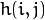
- map_y: Same as above, but in y direction. Note that map_y and map_x are both of the same size as src
- CV_INTER_LINEAR: The type of interpolation to use for non-integer pixels. This is by default.
- BORDER_CONSTANT: Default
How do we update our mapping matrices mat_x and mat_y? Go on reading:
Updating the mapping matrices: We are going to perform 4 different mappings:
Reduce the picture to half its size and will display it in the middle:
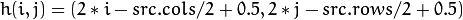
for all pairs 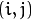 such that: 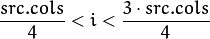 and
Turn the image upside down: 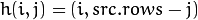
Reflect the image from left to right: 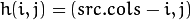
Combination of b and c: 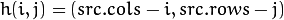
This is expressed in the following snippet. Here, map_x represents the first coordinate of h(i,j) and map_y the second coordinate.
for( int j = 0; j < src.rows; j++ ) { for( int i = 0; i < src.cols; i++ ) { switch( ind ) { case 0: if( i > src.cols*0.25 && i < src.cols*0.75 && j > src.rows*0.25 && j < src.rows*0.75 ) { map_x.at<float>(j,i) = 2*( i - src.cols*0.25 ) + 0.5 ; map_y.at<float>(j,i) = 2*( j - src.rows*0.25 ) + 0.5 ; } else { map_x.at<float>(j,i) = 0 ; map_y.at<float>(j,i) = 0 ; } break; case 1: map_x.at<float>(j,i) = i ; map_y.at<float>(j,i) = src.rows - j ; break; case 2: map_x.at<float>(j,i) = src.cols - i ; map_y.at<float>(j,i) = j ; break; case 3: map_x.at<float>(j,i) = src.cols - i ; map_y.at<float>(j,i) = src.rows - j ; break; } // end of switch } } ind++; }
Result¶
After compiling the code above, you can execute it giving as argument an image path. For instance, by using the following image:
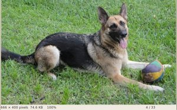This is the result of reducing it to half the size and centering it:

Turning it upside down:

Reflecting it in the x direction:

Reflecting it in both directions:
{kind=link}

Help and Feedback
You did not find what you were looking for?- Ask a question on the Q&A forum.
- If you think something is missing or wrong in the documentation, please file a bug report.